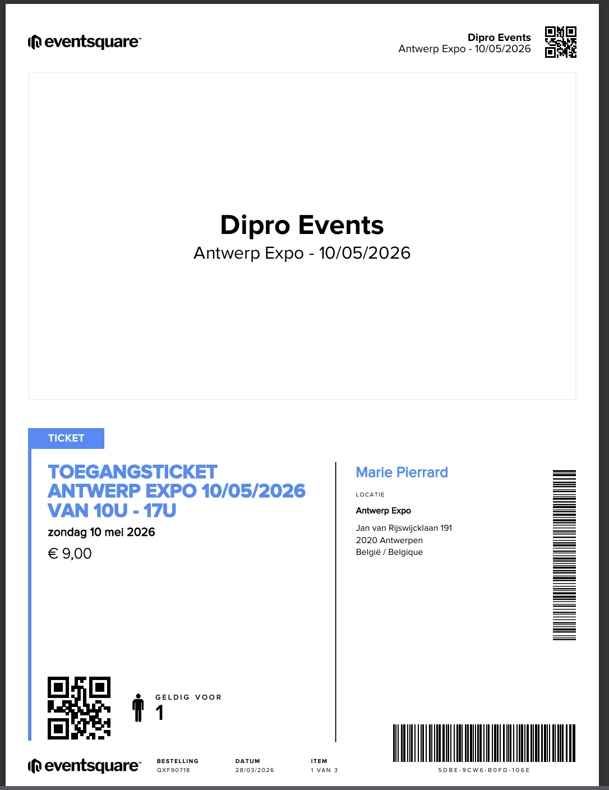
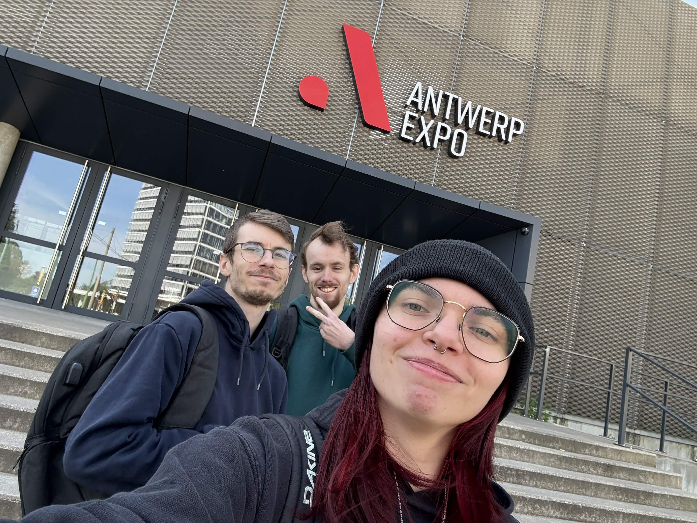
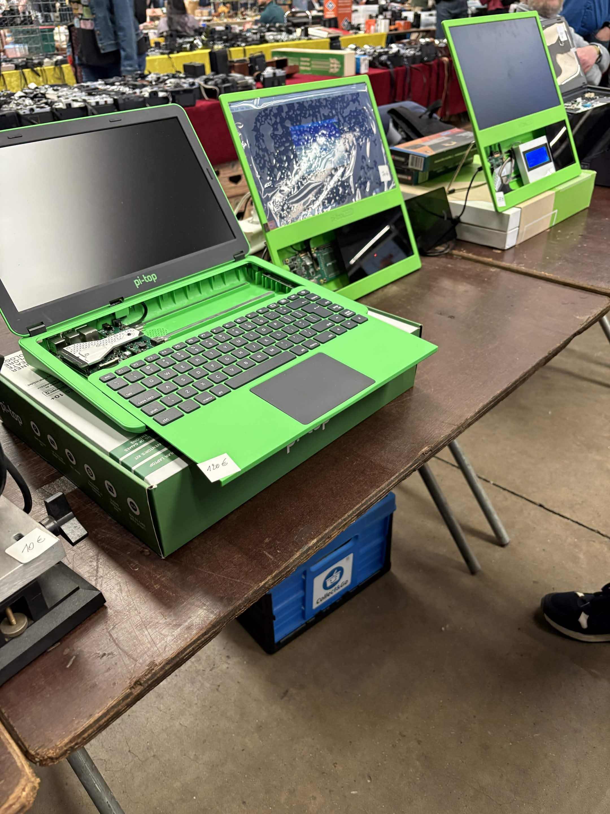

1. Cadre de l'activité
J'ai visité le Salon du multimédia et de l'informatique qui se tenait à l'Anvers Expo, accompagnée de deux amis. Attirée par l'intitulé du salon, je m'attendais à y trouver des entreprises tech présentant leurs dernières innovations, des démonstrations de robots ou encore des stands informatiques professionnels.
La réalité était tout autre : il s'agissait en fait d'un grand salon de collectionneurs, avec des centaines d'exposants proposant du matériel vintage — vinyles, CD, vieux jeux vidéo, consoles rétro, ordinateurs d'époque, appareils photo analogiques et voitures miniatures de collection. Une vraie brocante géante dédiée à la culture multimédia et informatique des décennies passées.
2. Ce que j'ai appris
Même si ce salon ne correspondait pas à mes attentes initiales, cette visite m'a offert une perspective unique sur l'histoire de l'informatique et du gaming. J'ai pu observer de près des ordinateurs des années 70 et 80, des consoles qui ont posé les bases de l'industrie du jeu vidéo telle qu'on la connaît aujourd'hui, et du matériel informatique dont on n'imagine plus l'existence.
Cette immersion dans le passé technologique m'a permis de mieux comprendre l'évolution fulgurante du secteur informatique en quelques décennies seulement. Voir de ses propres yeux les premières machines de jeux vidéo m'a donné une vraie perspective sur les origines de l'esport et du gaming, des domaines dans lesquels je souhaite construire ma carrière.
3. Lien avec mon projet professionnel
L'esport et le gaming ne sont pas apparus du jour au lendemain. Ils sont le résultat de décennies d'évolution technologique, depuis les premières consoles jusqu'aux PC gaming ultra-performants d'aujourd'hui. Cette visite m'a permis de prendre conscience de cette histoire et de mieux situer mon projet professionnel dans une trajectoire plus large.
Comprendre d'où vient la technologie qu'on utilise aujourd'hui, c'est aussi mieux comprendre comment elle fonctionne et vers où elle se dirige. Pour quelqu'un qui souhaite travailler dans le secteur du gaming et de l'esport, avoir cette culture générale informatique est un vrai atout. Cette expérience a renforcé ma curiosité pour l'histoire de l'informatique et m'a donné envie d'en apprendre davantage sur les technologies qui ont façonné notre monde numérique.
4. Preuve de participation
Ticket d'entrée du salon, photo devant l'Anvers Expo et photo prise à l'intérieur du salon.


